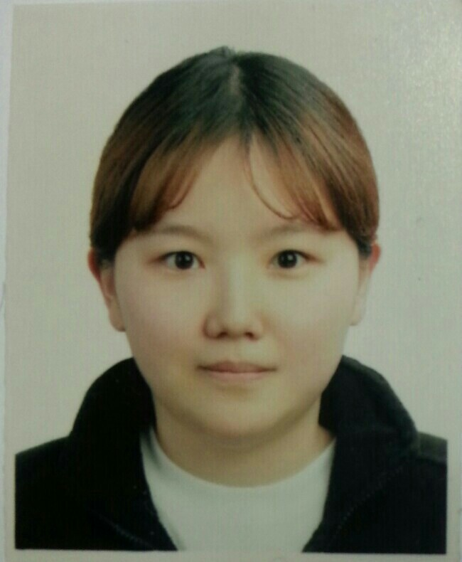
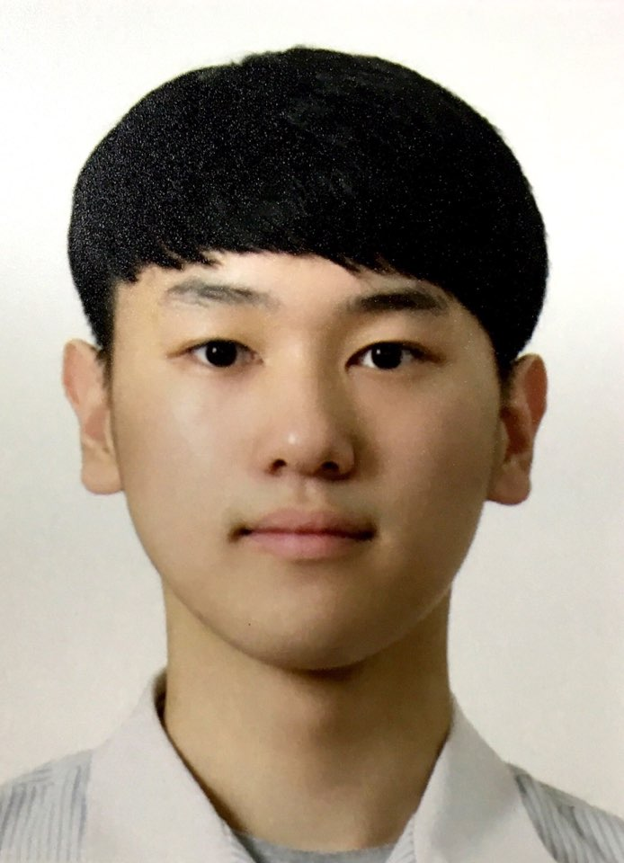

|
12113311 김윤아 |
 |
| 홈페이지를 만들면서 배웠던 것을 복습하고. 아직 배우지 않은 CSS/Javascript까지 예습하면서 유익한 시간이었습니다. 저희 팀의 주제는 아이언 맨 속 가상의 회사인 스타크 Company로 실제로 수트와 무기를 판다면 어떨까 상상하면서 홈페이지를 만들어 보았고 재밌었습니다. 서버까지 구축하지 못해서 구매 페이지는 구현하지 못하였지만 다른 학우들과 매주 만나서 홈페이지를 만드는 즐거운 시간이었습니다~~! 나중에 기회가 된다면 서버를 연결해서 더 멋진 홈페이지를 제작하고 싶습니다. |
|  |
15109345 위정빈 |
| 비록 완벽한 수준의 홈페이지를 만들어 내지는 못했지만 강의 시간에 배운 HTML 뿐만 아니라 CSS, 자바 스크립트에 대해서도 팀원들과 함께 책을 찾아보고 인터넷을 뒤지며 공부해보고 적용해보아서 실력이 조금이나마 더 향상된 것 같습니다. 하나의 페이지를 만들기 위해 각자 역할을 분담하여 진행하니 부담을 덜 수 있었고 시간 또한 단축시킬 수 있었습니다. 이번 웹프로그래밍 프로젝트를 통해 팀워크가 얼마나 중요한 지에 대해 다시 한 번 깨닫게 되었고, 서로 다른 생각을 가지고 있던 팀원들과 의견을 조율해 나가면서 인간관계적인 많은 것들을 배울 수 있었습니다. 기회가 된다면 PHP나 JSP같은 언어들도 배워서 더 완성도 있는 홈페이지를 만들어보고 싶습니다. |
|
14109356 이경훈 |
|
|
저는 컴퓨터공학과에 진학을 했지만, 딱히 컴퓨터를 이용해 무엇인가 만들어 본 적은 없었습니다. 그런데 이번 웹프로그래밍 프로젝트를 진행하면서 강의시간에 배운 html, 예습한 CSS, JAVAscript를 이용해서 처음으로 뭔가를 만들어 보았습니다. 그만큼 뿌듯했고, 기억에 오래 남을 것 같습니다. 그리고 같이 프로젝트를 진행한 조원분들과 팀워크도 잘 맞아서 프로젝트의 즐거움을 한껏 느낄 수 있었습니다. 이번 프로젝트에서 그치지 않고, 웹뿐만 아니라 다른 분야에서도 다양한 프로젝트를 진행해 더욱 더 많은 경험을 쌓고 싶습니다. |